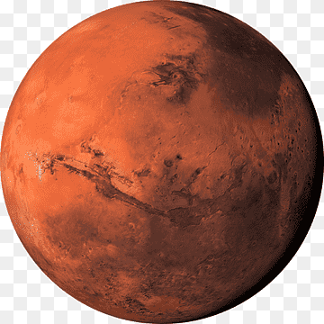
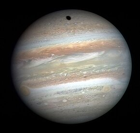

Mercury
Mercury, Innermost planet of the solar system. With the shortest period of revolution (only 88 Earth days) and the highest average orbital speed (30 mi/sec [48 km/sec]) of any planet, it is aptly named after the Roman fleet-footed messenger god. It spins very slowly, making one complete rotation relative to the stars every 59 Earth days, while its solar day (from one sunrise to the next) is 176 Earth days, owing to its revolution around the Sun.

Venus
Venus is the second planet from the Sun. Venus is similar in structure and size to Earth, and is sometimes called Earth's evil twin. Its thick atmosphere traps heat in a runaway greenhouse effect, making it the hottest planet in our solar system with surface temperatures hot enough to melt lead. Below the dense, persistent clouds, the surface has volcanoes and deformed mountains.

Earth
While Earth is only the fifth largest planet in the solar system, it is the only world in our solar system with liquid water on the surface. Just slightly larger than nearby Venus, Earth is the biggest of the four planets closest to the Sun, all of which are made of rock and metal.

Mars
Mars was much wetter and warmer, with a thicker atmosphere, billions of years ago. Mars was named by the Romans for their god of war because its reddish color was reminiscent of blood. The Egyptians called it "Her Desher," meaning "the red one." Even today, it is frequently called the "Red Planet" because iron minerals in the Martian dirt oxidize, or rust, causing the surface to look red.

Jupiter
Jupiter is a world of extremes. It's the largest planet in our solar system. If it were a hollow shell, 1,000 Earths could fit inside. It's also the oldest planet, forming from the dust and gases left over from the Sun's formation 4.5 billion years ago. But it has the shortest day in the solar system, taking only 10.5 hours to spin around once on its axis.

Saturn
Like fellow gas giant Jupiter, Saturn is a massive ball made mostly of hydrogen and helium. Saturn is not the only planet to have rings, but none are as spectacular or as complex as Saturn's. Saturn also has dozens of moons. From the jets of water that spray from Saturn's moon Enceladus to the methane lakes on smoggy Titan, the Saturn system is a rich source of scientific discovery and still holds many mysteries.
Uranus
Uranus is a very cold and windy world. The ice giant is surrounded by 13 faint rings and 28 small moons. Uranus rotates at a nearly 90-degree angle from the plane of its orbit. This unique tilt makes Uranus appear to spin sideways, orbiting the Sun like a rolling ball.

Neptune
Dark, cold, and whipped by supersonic winds, ice giant Neptune is more than 30 times as far from the Sun as Earth. Neptune is the only planet in our solar system not visible to the naked eye. In 2011 Neptune completed its first 165-year orbit since its discovery in 1846. Neptune is so far from the Sun that high noon on the big blue planet would seem like dim twilight to us. The warm light we see here on our home planet is roughly 900 times as bright as sunlight on Neptune.

Pluto
Pluto is only about 1,400 miles wide. At that small size, Pluto is only about half the width of the United States. It's about 3.6 billion miles away from the Sun, and it has a thin atmosphere composed mostly of nitrogen, methane, and carbon monoxide. On average, Pluto’s temperature is -387°F (-232°C), making it too cold to sustain life.
Makemake
Dwarf planet Makemake – along with Pluto, Haumea, and Eris – is located in the Kuiper Belt, a donut-shaped region of icy bodies beyond the orbit of Neptune. Makemake is slightly smaller than Pluto, and is the second-brightest object in the Kuiper Belt as seen from Earth while Pluto is the brightest. It takes about 305 Earth years for this dwarf planet to make one trip around the Sun.
Ceres
Dwarf planet Ceres is the largest object in the asteroid belt between Mars and Jupiter, and it's the only dwarf planet located in the inner solar system. It was the first member of the asteroid belt to be discovered when Giuseppe Piazzi spotted it in 1801. When NASA's Dawn arrived in 2015, Ceres became the first dwarf planet to receive a visit from a spacecraft. Called an asteroid for many years, Ceres is so much bigger and so different from its rocky neighbors that scientists classified it as a dwarf planet in 2006. Even though Ceres comprises 25% of the asteroid belt's total mass, Pluto is still 14 times more massive.